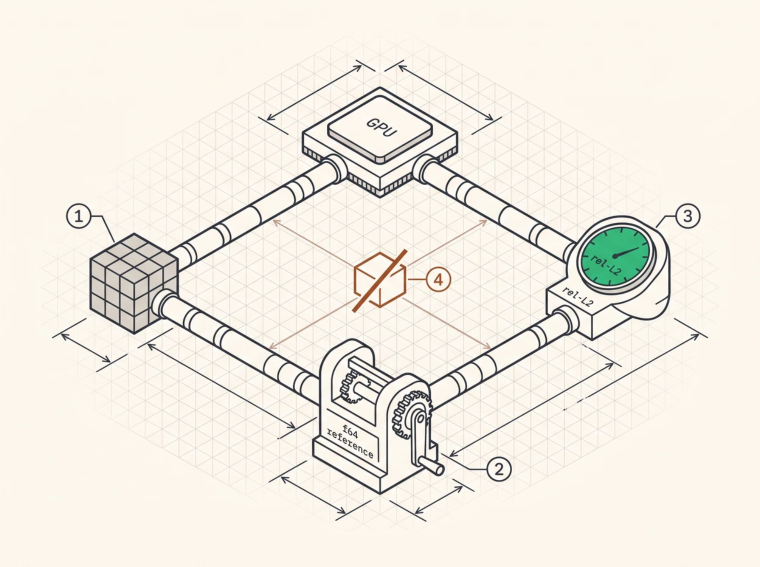

Correctness Validation
Why this is harder than it looks
A wrong inference stack doesn’t crash. It generates fluent, plausible text that’s slightly worse than it should be, and nothing fires. No assertion, no red test, no user reporting that the sixteenth layer’s RoPE pairing is transposed. The quality loss hides inside the model’s ordinary variance, where it can sit for months.
Which is why correctness for inference needs a stronger method than “the output looks reasonable.”
The reference oracle methodology
Implement the same mathematics independently, at higher precision, and compare. The reference has to be four things.
Independent , meaning pure host code sharing no source with the kernel under test, because if both use the same helper for RoPE angles and the helper is wrong, the test passes and the model is broken. That’s the most important property and the easiest to lose.
High precision , meaning f64, which has 52 mantissa bits against f16’s 10 and f32’s 23, so computing the reference in f64 removes rounding as a variable and any disagreement beyond expected f16 rounding is a real difference in what was computed.
Faithful to the datapath , which sounds like it contradicts the previous point and doesn’t. The reference computes in f64 while round-tripping through the storage precision at exactly the points the kernel does, so if the kernel stores an f16 intermediate the reference should too. Otherwise you’re comparing two different algorithms and chasing phantom errors.
Per-step , comparing at every stage rather than only at the end.

O
1One input drives both paths. The GPU path is the thing under test. O2The reference computes the same mathematics in f64 on the host, and it round-trips through the storage precision at exactly the points the kernel does, so you are comparing one algorithm rather than two.O
3The comparator reports scale-invariant relative L2. A correct FP16 layer lands near 1e-5, and 1e-2 is a bug. O4The failure mode is a shared component. If both paths use the same wrong RoPE helper, the test passes and the model is broken, which is why golden vectors from a genuinely different implementation are the only real defence. Agreement below 1e-8 is evidence of this, not of quality.
Relative L2 as the metric
rel_L2 = ‖kernel − reference‖₂ / ‖reference‖₂Scale-invariant, well-behaved, and it aggregates over a tensor without being dominated by one element.
Typical values from a working stack, measured against an f64 reference.
| OPERATION | PRECISION | OBSERVED |
|---|---|---|
| Decode attention | FP16 KV | 3.3e-7 (max rel err) |
| Decode attention | FP8 KV | 3.89e-7 (max rel err) |
| MoE FFN (real dims) | FP16 | 5.8e-4 (rel-L2) |
| Router weights | FP32 | 9e-18 (essentially exact) |
| Full decoder layer | FP16 datapath | 3.28e-5 (rel-L2) |
| 4-layer model, per-step logits | FP16 datapath | 9.49e-4 (max rel-L2) |
| Multi-GPU all-reduce | FP32 | bit-exact against CPU |
Read the pattern rather than the individual numbers. Error grows with the number of chained FP16 operations, so a single attention kernel sits at 1e-7, a full layer at 1e-5, and a four-layer model’s logits at 1e-3, because rounding accumulates. Knowing what your stack should produce at each level is what lets you recognise 1e-2 as a bug.
As rules of thumb, below 1e-3 for a full layer is consistent with correct FP16 arithmetic, above 1e-2 is a bug, and below 1e-8 for an FP16 kernel means your reference isn’t independent and you’ve accidentally tested the kernel against itself.
Choose the metric carefully
A cautionary tale that generalises. An early MoE correctness check used per-element relative error with an epsilon in the denominator to avoid dividing by zero.
err = |a − b| / (|b| + 1e-2)On synthetic test data with small output magnitudes the epsilon dominated the denominator and the metric read 0.17, apparently catastrophic. The kernel was correct all along and the metric was wrong, and switching to scale-invariant relative L2 gave 5.8e-4.
Two lessons. A metric with a magic constant will betray you as soon as your data’s scale changes, and synthetic test data always has a different scale from real data. And, more expensively, when a test fails, suspect the test . A failing test is evidence about the system including the test , and time spent debugging a correct kernel against a broken metric is the most common way correctness work goes wrong.
Per-step validation
For a multi-layer model, compare at every step. Run the reference for token t in f64, mirroring the kernel’s storage rounding, run the GPU path for the same token, compare logits and ideally each layer’s output, and if error exceeds threshold at layer k then the bug is at or before layer k .
Per-step comparison is what makes debugging tractable, because systematic errors accumulate linearly across layers, so a 1e-4 per-layer bias becomes 1e-2 by layer 94 and by then every layer looks wrong. Catching it where it enters is the difference between an afternoon and a week.
MoE tie-breaks
Router top-k selection can tie and the GPU breaks ties by index order, so a reference breaking them differently selects different experts and produces a large, meaningless disagreement.
The fix that makes MoE testable is to have the reference follow the GPU’s selections , reading back the chosen expert indices and routing weights and using exactly those, which isolates the expert FFN computation from the routing decision. Then test routing separately by comparing indices and weights directly, where the correct comparison is exact equality of indices rather than a floating-point tolerance.
The same principle applies to sampling. To test the model, compare logits rather than sampled tokens, because a single differing logit near the top of the distribution changes the token and makes the comparison meaningless.
The circularity risk
The failure mode of oracle testing is circularity, where the reference shares an assumption with the kernel so both are wrong together and the test passes.
Shared formula , where both implement RoPE with the same incorrect pairing convention, gets mitigated by deriving the reference from the model’s specification and validating against a third implementation, a published reference or a framework, at least once. Shared constants , where both use ε = 1e-5 for a model trained with 1e-6, gets mitigated by reading constants from the checkpoint’s config in both paths and asserting them. Shared layout , where both assume the same wrong weight transposition, gets mitigated by deriving the layout from the checkpoint’s tensor shapes rather than from the kernel’s expectations, and it’s insidious because a consistently transposed weight often still produces plausible output.
The strongest defence is golden vectors , a small set of inputs with outputs captured from a trusted implementation of the same checkpoint, stored in the repository and checked in CI. They catch the entire class of shared-assumption errors that no amount of internal consistency will, and if you can’t run a reference implementation on your hardware, produce them elsewhere and transfer the file, since the whole point is that the trusted implementation should be a different implementation.
Testing the test
A test that has never failed is a formality, so validate the oracle by breaking things on purpose.
Inject bugs. Change a rounding mode, transpose a matrix, swap a dimension, use the wrong ε, shift a RoPE index by one, and check each gets caught, recording by how much , which calibrates your thresholds against real failure magnitudes. Check sensitivity , since the oracle has to distinguish FP16 rounding at 1e-5 from a real bug at 1e-2, and if both pass the threshold is too loose while if rounding fails it’s too tight. And find the boundary by sweeping the magnitude of an injected error until detection begins, which is your actual sensitivity rather than your intended one.
Numerical edge cases
Beyond the oracle, test rounding, verifying that narrowing conversions round to nearest even rather than toward zero. Test subnormals, verifying handling matches between kernel and reference and that whichever flush-to-zero mode you use is applied consistently. Test NaN and inf, verifying they propagate rather than becoming garbage and that a NaN anywhere in a batch doesn’t corrupt other sequences, which is a real failure mode in fused batched kernels. Test overflow, verifying FP32 to FP16 saturates rather than wrapping, using a BF16 checkpoint containing values above 65,504 (Chapter 21). And test boundary shapes, sequence length 1, exactly one block, exactly one token past a block boundary, and a full block table.
Beyond numerics, does it produce the right text
Numerical correctness is necessary and not sufficient, because a stack can be numerically perfect and wrong at the system level. The chat template misapplied, special tokens mishandled, the wrong EOS, a stop string truncating one character late, a sampling parameter interpreted differently.
Four tests catch those. End-to-end golden generations , fixed prompt, greedy sampling, fixed seed, comparing the exact output string against a stored value, which are sensitive to everything, which is what you want, and which will occasionally fail for benign reasons, which is why a human should review rather than auto-update them. Cross-engine comparison , running the same checkpoint through a mature engine and comparing greedy outputs, where divergence points at a real difference without telling you which side is right, though it does tell you where to look. Task benchmarks with confidence intervals for anything lossy, quantisation or compression or sparsity, because a 1-point difference on a 200question benchmark is noise. And long-context probes , needle-in-a-haystack at several depths, which catch the position-encoding and cache-management bugs short prompts never reach.
Key Concept
The f64 oracle is the gold standard for kernel correctness, built from independent code at high precision, faithful to the datapath’s rounding points, and compared per step with scale-invariant relative L2. Know the error magnitudes a correct stack produces, 1e-7 for a kernel, 1e-5 for a layer, 1e-3 for a few layers of logits, so you can recognise a bug. Guard against circularity with golden vectors from a genuinely different implementation, and against metric bugs by suspecting the test when it fails. Then test the system rather than only the numbers, templates and stop conditions and long-context behaviour included.
Exercises
Explain why an FP16 kernel agreeing with an f64 reference to 1e-10 is evidence of a problem. What problem?
Design an oracle for the paged attention kernel of Chapter 12 that would catch a block-table off-by-one, and show why a randomly generated block table catches it while a sequential one doesn’t.
A quantised model scores within noise on aggregate benchmarks while users report degraded performance on long documents. Design the evaluation that would have caught this before release.
Build: write an f64 reference for the full decoder layer of Chapter 22 and validate your GPU implementation against it. Then inject five distinct bugs and record the rel-L2 each produces.